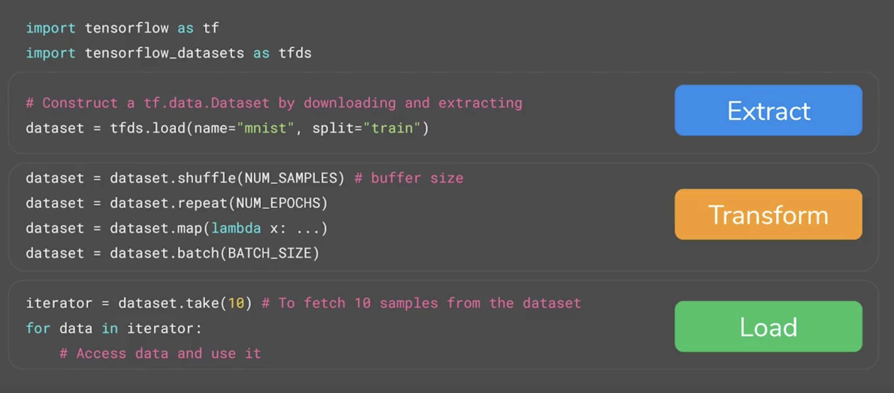
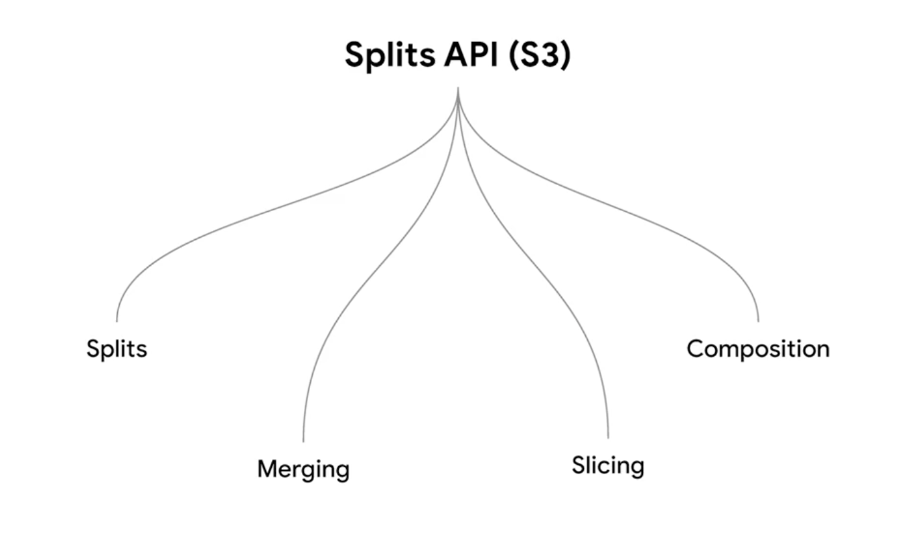

Extract - Transform - Load (ETL)

First, to perform the Extract process we use tfts.load. This handles everything from downloading the raw data to parsing and splitting it, giving us a dataset. Next, we perform the Transform process. In this simple example, our transform process will just consist of shuffling the dataset. Finally, we Load one record by using the take(1) method. In this case, each record consists of an image and its corresponding label. After loading the record we proceed to plot the image and print its corresponding label.
1 | # EXTRACT |
US3 API for TensorFlow datasets.

1 | import tensorflow as tf |
Before using the new S3 API, we must first find out whether the MNIST dataset implements the new S3 API. In the cell below we indicate that we want to use version 3.*.* of the MNIST dataset.
1 |
|
We can see that the code above printed True, which means that version 3.*.* of the MNIST dataset supports the new S3 API.
Now, let’s see how we can use the S3 API to download the MNIST dataset and specify the splits we want use. In the code below we download the train and test splits of the MNIST dataset and then we print their size. We will see that there are 60,000 records in the training set and 10,000 in the test set.
1 | train_ds, test_ds = tfds.load('mnist:3.*.*', split=['train', 'test']) |
In the S3 API we can use strings to specify the slicing instructions. For example, in the cell below we will merge the training and test sets by passing the string ’train+test' to the split argument.
1 | combined = tfds.load('mnist:3.*.*', split='train+test') |
We can also use Python style list slicers to specify the data we want. For example, we can specify that we want to take the first 10,000 records of the train split with the string 'train[:10000]', as shown below:
1 | first10k = tfds.load('mnist:3.*.*', split='train[:10000]') |
The S3 API, also allows us to specify the percentage of the data we want to use. For example, we can select the first 20\% of the training set with the string 'train[:20%]', as shown below:
1 | first20p = tfds.load('mnist:3.*.*', split='train[:20%]') |
We can see that first20p contains 12,000 records, which is indeed 20\% the total number of records in the training set. Recall that the training set contains 60,000 records.
Because the slices are string-based we can use loops, like the ones shown below, to slice up the dataset and make some pretty complex splits. For example, the loops below create 10 complimentary validation and training sets (each loop returns a list with 5 data sets).
1 | val_ds = tfds.load('mnist:3.*.*', split=['train[{}%:{}%]'.format(k, k+20) for k in range(0, 100, 20)]) |
The S3 API also allows us to compose new datasets by using pieces from different splits. For example, we can create a new dataset from the first 10\% of the test set and the last 80\% of the training set, as shown below.
1 | composed_ds = tfds.load('mnist:3.*.*', split='test[:10%]+train[-80%:]') |
Pipeline for Classifing Structured Data
Import TensorFlow and Other Libraries
1 | import pandas as pd |
Use Pandas to Create a Dataframe
Pandas is a Python library with many helpful utilities for loading and working with structured data. We will use Pandas to download the dataset and load it into a dataframe.
1 | filePath = f"{getcwd()}/../tmp2/heart.csv" |
| age | sex | cp | trestbps | chol | fbs | restecg | thalach | exang | oldpeak | slope | ca | thal | target | |
|---|---|---|---|---|---|---|---|---|---|---|---|---|---|---|
| 0 | 63 | 1 | 1 | 145 | 233 | 1 | 2 | 150 | 0 | 2.3 | 3 | 0 | fixed | 0 |
| 1 | 67 | 1 | 4 | 160 | 286 | 0 | 2 | 108 | 1 | 1.5 | 2 | 3 | normal | 1 |
| 2 | 67 | 1 | 4 | 120 | 229 | 0 | 2 | 129 | 1 | 2.6 | 2 | 2 | reversible | 0 |
| 3 | 37 | 1 | 3 | 130 | 250 | 0 | 0 | 187 | 0 | 3.5 | 3 | 0 | normal | 0 |
| 4 | 41 | 0 | 2 | 130 | 204 | 0 | 2 | 172 | 0 | 1.4 | 1 | 0 | normal | 0 |
Split the Dataframe Into Train, Validation, and Test Sets
The dataset we downloaded was a single CSV file. We will split this into train, validation, and test sets.
1 | train, test = train_test_split(dataframe, test_size=0.2) |
193 train examples
49 validation examples
61 test examples
Create an Input Pipeline Using tf.data
Next, we will wrap the dataframes with tf.data. This will enable us to use feature columns as a bridge to map from the columns in the Pandas dataframe to features used to train the model. If we were working with a very large CSV file (so large that it does not fit into memory), we would use tf.data to read it from disk directly.
1 | # EXERCISE: A utility method to create a tf.data dataset from a Pandas Dataframe. |
1 | batch_size = 5 # A small batch sized is used for demonstration purposes |
Understand the Input Pipeline
Now that we have created the input pipeline, let’s call it to see the format of the data it returns. We have used a small batch size to keep the output readable.
1 | for feature_batch, label_batch in train_ds.take(1): |
Every feature: ['age', 'sex', 'cp', 'trestbps', 'chol', 'fbs', 'restecg', 'thalach', 'exang', 'oldpeak', 'slope', 'ca', 'thal']
A batch of ages: tf.Tensor([51 63 64 58 57], shape=(5,), dtype=int32)
A batch of targets: tf.Tensor([0 1 0 0 0], shape=(5,), dtype=int64)
We can see that the dataset returns a dictionary of column names (from the dataframe) that map to column values from rows in the dataframe.
Create Several Types of Feature Columns
TensorFlow provides many types of feature columns. In this section, we will create several types of feature columns, and demonstrate how they transform a column from the dataframe.
1 | # Try to demonstrate several types of feature columns by getting an example. |
1 | # A utility method to create a feature column and to transform a batch of data. |
Numeric Columns
The output of a feature column becomes the input to the model (using the demo function defined above, we will be able to see exactly how each column from the dataframe is transformed). A numeric column is the simplest type of column. It is used to represent real valued features.
1 | # EXERCISE: Create a numeric feature column out of 'age' and demo it. |
[[51.]
[58.]
[63.]
[64.]
[60.]]
In the heart disease dataset, most columns from the dataframe are numeric.
Bucketized Columns
Often, you don’t want to feed a number directly into the model, but instead split its value into different categories based on numerical ranges. Consider raw data that represents a person’s age. Instead of representing age as a numeric column, we could split the age into several buckets using a bucketized column.
1 | # EXERCISE: Create a bucketized feature column out of 'age' with |
[[0. 0. 0. 0. 0. 0. 0. 1. 0. 0. 0.]
[0. 0. 0. 0. 0. 0. 0. 0. 1. 0. 0.]
[0. 0. 0. 0. 0. 0. 0. 0. 0. 1. 0.]
[0. 0. 0. 0. 0. 0. 0. 0. 0. 1. 0.]
[0. 0. 0. 0. 0. 0. 0. 0. 0. 1. 0.]]
Notice the one-hot values above describe which age range each row matches.
Categorical Columns
In this dataset, thal is represented as a string (e.g. ‘fixed’, ‘normal’, or ‘reversible’). We cannot feed strings directly to a model. Instead, we must first map them to numeric values. The categorical vocabulary columns provide a way to represent strings as a one-hot vector (much like you have seen above with age buckets).
Note: You will probably see some warning messages when running some of the code cell below. These warnings have to do with software updates and should not cause any errors or prevent your code from running.
1 | # EXERCISE: Create a categorical vocabulary column out of the |
[[0. 1. 0.]
[0. 1. 0.]
[0. 0. 1.]
[0. 0. 1.]
[0. 1. 0.]]
The vocabulary can be passed as a list using categorical_column_with_vocabulary_list, or loaded from a file using categorical_column_with_vocabulary_file.
Embedding Columns
Suppose instead of having just a few possible strings, we have thousands (or more) values per category. For a number of reasons, as the number of categories grow large, it becomes infeasible to train a neural network using one-hot encodings. We can use an embedding column to overcome this limitation. Instead of representing the data as a one-hot vector of many dimensions, an embedding column represents that data as a lower-dimensional, dense vector in which each cell can contain any number, not just 0 or 1. You can tune the size of the embedding with the dimension parameter.
1 | # EXERCISE: Create an embedding column out of the categorical |
[[-1.4254066e-01 -1.0374661e-01 3.4352791e-01 -3.3996427e-01
-3.2193713e-02 -1.8381193e-01 -1.8051244e-01 3.2638407e-01]
[-1.4254066e-01 -1.0374661e-01 3.4352791e-01 -3.3996427e-01
-3.2193713e-02 -1.8381193e-01 -1.8051244e-01 3.2638407e-01]
[-6.5549983e-05 2.7680036e-01 4.1849682e-01 5.3418136e-01
-1.6281548e-01 2.5406811e-01 8.8969752e-02 1.8004593e-01]
[-6.5549983e-05 2.7680036e-01 4.1849682e-01 5.3418136e-01
-1.6281548e-01 2.5406811e-01 8.8969752e-02 1.8004593e-01]
[-1.4254066e-01 -1.0374661e-01 3.4352791e-01 -3.3996427e-01
-3.2193713e-02 -1.8381193e-01 -1.8051244e-01 3.2638407e-01]]
Hashed Feature Columns
Another way to represent a categorical column with a large number of values is to use a categorical_column_with_hash_bucket. This feature column calculates a hash value of the input, then selects one of the hash_bucket_size buckets to encode a string. When using this column, you do not need to provide the vocabulary, and you can choose to make the number of hash buckets significantly smaller than the number of actual categories to save space.
1 | # EXERCISE: Create a hashed feature column with 'thal' as the key and |
[[0. 0. 0. ... 0. 0. 0.]
[0. 0. 0. ... 0. 0. 0.]
[0. 0. 0. ... 0. 0. 0.]
[0. 0. 0. ... 0. 0. 0.]
[0. 0. 0. ... 0. 0. 0.]]
Crossed Feature Columns
Combining features into a single feature, better known as feature crosses, enables a model to learn separate weights for each combination of features. Here, we will create a new feature that is the cross of age and thal. Note that crossed_column does not build the full table of all possible combinations (which could be very large). Instead, it is backed by a hashed_column, so you can choose how large the table is.
1 | # EXERCISE: Create a crossed column using the bucketized column (age_buckets), |
[[0. 0. 0. ... 0. 0. 0.]
[0. 0. 0. ... 0. 0. 0.]
[0. 0. 0. ... 0. 0. 0.]
[0. 0. 0. ... 0. 0. 0.]
[0. 0. 0. ... 0. 0. 0.]]
Choose Which Columns to Use
We have seen how to use several types of feature columns. Now we will use them to train a model. The goal of this exercise is to show you the complete code needed to work with feature columns. We have selected a few columns to train our model below arbitrarily.
If your aim is to build an accurate model, try a larger dataset of your own, and think carefully about which features are the most meaningful to include, and how they should be represented.
1 | dataframe.dtypes |
age int64
sex int64
cp int64
trestbps int64
chol int64
fbs int64
restecg int64
thalach int64
exang int64
oldpeak float64
slope int64
ca int64
thal object
target int64
dtype: object
You can use the above list of column datatypes to map the appropriate feature column to every column in the dataframe.
1 | # EXERCISE: Fill in the missing code below |
Create a Feature Layer
Now that we have defined our feature columns, we will use a DenseFeatures layer to input them to our Keras model.
1 | # EXERCISE: Create a Keras DenseFeatures layer and pass the feature_columns you just created. |
Earlier, we used a small batch size to demonstrate how feature columns worked. We create a new input pipeline with a larger batch size.
1 | batch_size = 32 |
Create, Compile, and Train the Model
1 | model = tf.keras.Sequential([ |
......
7/7 [==============================] - 0s 45ms/step - loss: 0.2225 - accuracy: 0.8912 - val_loss: 0.6998 - val_accuracy: 0.6939
Epoch 98/100
7/7 [==============================] - 0s 55ms/step - loss: 0.2089 - accuracy: 0.9067 - val_loss: 0.6846 - val_accuracy: 0.7143
Epoch 99/100
7/7 [==============================] - 0s 44ms/step - loss: 0.2043 - accuracy: 0.8964 - val_loss: 0.7292 - val_accuracy: 0.7347
Epoch 100/100
7/7 [==============================] - 0s 55ms/step - loss: 0.2008 - accuracy: 0.9016 - val_loss: 0.7064 - val_accuracy: 0.7143
<tensorflow.python.keras.callbacks.History at 0x7f33184937b8>
1 | loss, accuracy = model.evaluate(test_ds) |
2/2 [==============================] - 1s 329ms/step - loss: 0.5511 - accuracy: 0.8197
Accuracy 0.8196721